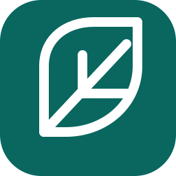
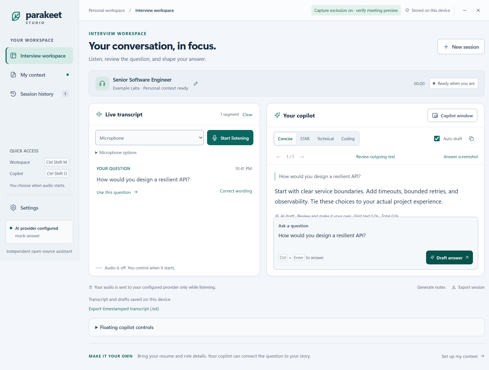
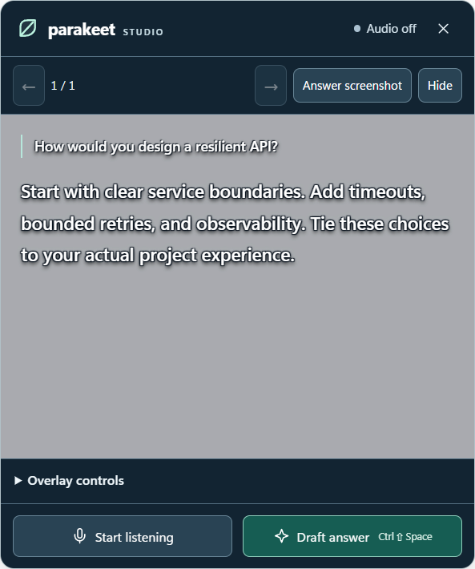

Hear both sides.
Transcribe your microphone, supported Windows system audio, or both. Review spoken corrections and hold auto-drafting until the question is ready.

parakeetREA STUDIOGitHubYOUR OPEN-SOURCE WINDOWS COPILOT
An open-source AI assistant for interview practice and permitted meetings. Turn live audio and screenshots into drafts you can review, right beside your work.
v0.8.1 · Windows x64 · Unsigned experimental build
Prefer an installer?Release notes & checksums

Your conversation. Your context. Your next draft.
A copilot that moves with youLess switching windows.
More room to think.
FROM QUESTION TO STARTING POINT
Built for interview practice and permitted meetings. Listen, review the wording and choose when to send. AI provides the draft; you stay in control.
Transcribe your microphone, supported Windows system audio, or both. Review spoken corrections and hold auto-drafting until the question is ready.
Ask about visible code, SQL, diagrams or text with Answer screenshot. Use review and crop when you want more control over what you share.
Switch between concise, STAR, technical and coding styles. Add your own resume and role context, then review every draft before using it.
A question you might hear
A starting point to review
Use an idempotency key for requests that change state. Store the result against that key, so a retry can return the previous result instead of repeating the operation. Define an expiry and handle concurrent duplicates.
Illustrative examples, not live AI output. No API request is made here.
A FEW MINUTES TO YOUR FIRST DRAFT
Choose the portable EXE to run directly, or the per-user installer. Close older copies and back up your profile before upgrading.
Download portable EXEGet your own Gemini key and enter it in the desktop app’s Settings. Start with an eligible free-tier project and non-personal practice content.
Get the API-key guideAsk a typed question first. Then test microphone and system audio separately. Open the copilot, adjust its position and review your first draft.
Follow the first-answer guideOPEN BY DESIGN
Read the code, bring your provider and choose how much history stays on your device.
Explore the GitHub repositoryThis website never asks for an API key. The desktop app uses your own configured connection; no shared key is bundled.
Local history, memory-only mode and retention controls help you manage transcripts and drafts. Cloud providers receive the content you send.
AI can mishear or invent details. Review answers, check code and ask for clarification. Internet access is required for cloud features.
The application is free and MIT-licensed. You bring your own API key. Eligible Gemini projects may have a free tier, but availability, quotas and provider charges depend on your account. No shared key is included.
Yes. Choose System audio to capture supported Windows output audio, Microphone for your voice, or both. Device and meeting-app routing can vary. Test the selected source before a session and use headphones to reduce feedback.
Yes. Answer screenshot captures the selected display and requests an answer from an image-capable provider. It can help explain code, SQL and visible questions. Only visible screen content is captured. Review private information before sending; verify generated code and answers yourself.
Audio, prompts, screenshots and selected context are sent to your configured provider when you use those features. History can be stored locally, with memory-only and retention options. Review the provider terms and the app privacy settings. This website never asks for your API key and makes no AI requests.
The Windows app requests capture exclusion for its workspace and overlay. Results depend on Windows and the sharing tool. Universal invisibility is not guaranteed; verify the meeting preview and use assistance only where it is permitted.
No. Version 0.8.1 is an unsigned experimental prerelease. Windows may show an unknown-publisher warning. Check the release source and SHA-256 checksums before deciding to run it. Do not disable Windows security.
No offline model is bundled. Cloud features need an internet connection and provider access. Answers and transcription can be wrong, and speed varies with the connection, model and task. Review drafts, clarify missing information and test code before relying on it.
No. Parakeet REA Studio is an independently written open-source project. It is not affiliated with ParakeetAI and does not include vendor binaries or extracted source.
A LITTLE SUPPORT. A CLEARER NEXT STEP.
Download Parakeet REA Studio for Windows.
Free, open source, and ready for your own API key.
v0.8.1 · Windows x64 · Unsigned experimental prerelease
Download installer · Checksums & release notes